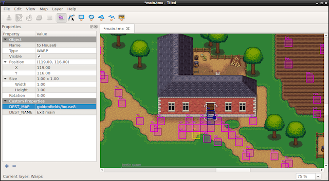
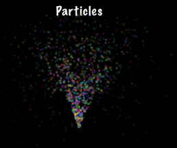

Other Node Types
You are using Sprite, Label and Action objects in your game and it is making
progress. Besides the basic Node types described in previous chapters, Cocos2d-x also
provides more advanced Node types to help build special functionality. Perhaps
you want to make a tile-based game? Or maybe a 2d side scroller? Or maybe you
want to add particle effects to your game? Cocos2d-x provides Node objects to
help you accomplish these goals!
TileMap
TileMaps are maps made up of tiles. Each tile can have independent behavior.
TileMaps are stored in an XML-based map format called TML. TMX was originally
designed for tile-based maps but is also suitable for more generic game levels
due to its support for various object types. TMX objects are easy to create:
// reading in a tiled map.
auto map = TMXTiledMap::create("TileMap.tmx");
addChild(map, 0, 99); // with a tag of '99'
Tile-based maps can have many layers, determined by a z-order. You can access a specific layer by it's name:
// how to get a specific layer
auto map = TMXTiledMap::create("TileMap.tmx");
auto layer = map->getLayer("Layer0");
auto tile = layer->getTileAt(Vec2(1, 63));
Each tile has a unique position and id. This makes it very easy to cherry pick specific tiles. You can access any tile by its id:
// to obtain a specific tiles id
unsigned int gid = layer->getTileGIDAt(Vec2(0, 63));
Example tiled-map layouts:


How do you make a tiled-map? There are many tools that do this. Tiled is a popular tool. It is actively developed and has a great user community. The screen-shots above are actual Tiled projects.
Particle System
Perhaps your game needs effects like burning fire, spell casting visuals or explosions. How would you make such complex effects? Is it even possible? Yes, it is. Using a particle system. The term particle system refers to a computer graphics technique that uses a large number of very small sprites or other graphic objects to simulate certain kinds of fuzzy phenomena, which are otherwise very hard to reproduce with conventional rendering techniques. Some realistic examples might include highly chaotic systems, natural phenomena, or processes caused by chemical reactions. Here are a few examples of particle effects:


Tools for creating Particle Effects
Even though you can always create particle effects by hand, massaging each property to your liking. There are several third party tools for creating particle effects. A few of these tools are:
- Particle Designer: A very powerful particle effects editor on Mac
- V-play particle editor: A cross-platform particle editor for Cocos2d-x
- Particle2dx: An online web particle designer
These tools usually export a .plist file that you can read in with Cocos2d-x to
use your creation inside your game. Just like with all of the other classes we
have worked with so far we use the create() method:
// create by plist file
auto particleSystem = ParticleSystem::create("SpinningPeas.plist");
Built-In Particle Effects
Are you ready to add particle effects to your game? We hope so! Are you not yet comfortable with creating custom particle effects? For ease of convenience there are a number of built-in particle effects that you can choose from. Take a look at this list:
-ParticleFire: Point particle system. Uses Gravity mode.
-ParticleFireworks: Point particle system. Uses Gravity mode.
-ParticleSun: Point particle system. Uses Gravity mode.
-ParticleGalaxy: Point particle system. Uses Gravity mode.
-ParticleFlower: Point particle system. Uses Gravity mode.
-ParticleMeteor: Point particle system. Uses Gravity mode.
-ParticleSpiral: Point particle system. Uses Gravity mode.
-ParticleExplosion: Point particle system. Uses Gravity mode.
-ParticleSmoke: Point particle system. Uses Gravity mode.
-ParticleSnow: Point particle system. Uses Gravity mode.
-ParticleRain: Point particle system. Uses Gravity mode.
Using ParticleFireworks as an example, you can use the built-in effects easily:
auto emitter = ParticleFireworks::create();
addChild(emitter, 10);
The result is a particle effect that looks something like:

But what do you do if your particle effect isn't quite the way you want? That's right, you can manually manipulate it! Let's take the same fireworks example above and manipulate it even further by manually changing its properties:
auto emitter = ParticleFireworks::create();
// set the duration
emitter->setDuration(ParticleSystem::DURATION_INFINITY);
// radius mode
emitter->setEmitterMode(ParticleSystem::Mode::RADIUS);
// radius mode: 100 pixels from center
emitter->setStartRadius(100);
emitter->setStartRadiusVar(0);
emitter->setEndRadius(ParticleSystem::START_RADIUS_EQUAL_TO_END_RADIUS);
emitter->setEndRadiusVar(0); // not used when start == end
addChild(emitter, 10);
Parallax
A Parallax Node is a special Node type that simulates a parallax scroller.
What did you say? A para.. what? Yes, parallax Simply put you can consider
a ParallaxNode to be a special effect that makes it appear that the position
or direction of an object appears to differ when viewed from different positions.
Simple every day examples include looking through the viewfinder and the lens of
a camera. You can think of many games that function this way, Super Mario Bros
being a classic example. ParallaxNode objects can be moved around by a Sequence
and also manually by mouse, touch, accelerometer or keyboard events.
Parallax nodes are a bit more complex than regular nodes. Why? Because they
require the use of multiple nodes to function. A ParallaxNode cannot function
by itself. You need at least 2 other Node objects to complete a ParallaxNode.
As usual, in true Cocos2d-x fashion, a ParallaxNode is easy to create:
// create ParallaxNode
auto paraNode = ParallaxNode::create();
Since you need multiple Node objects, they too are easily added:
// create ParallaxNode
auto paraNode = ParallaxNode::create();
// background image is moved at a ratio of 0.4x, 0.5y
paraNode->addChild(background, -1, Vec2(0.4f,0.5f), Vec2::ZERO);
// tiles are moved at a ratio of 2.2x, 1.0y
paraNode->addChild(middle_layer, 1, Vec2(2.2f,1.0f), Vec2(0,-200) );
// top image is moved at a ratio of 3.0x, 2.5y
paraNode->addChild(top layer, 2, Vec2(3.0f,2.5f), Vec2(200,800) );
OK, looks and feels familiar, right? Notice a few items! Each Node object that
was added is given a unique z-order so that they stack on top of each other.
Also notice the additional 2 Vec2 type parameters in the addChild() call. These
are the ratio and offset. These parameters can be thought of as the ratio
of speed to the parent Node.
It's hard to show a ParallaxNode in text, so please run the example Programmer Guide Sample code to see this in action!